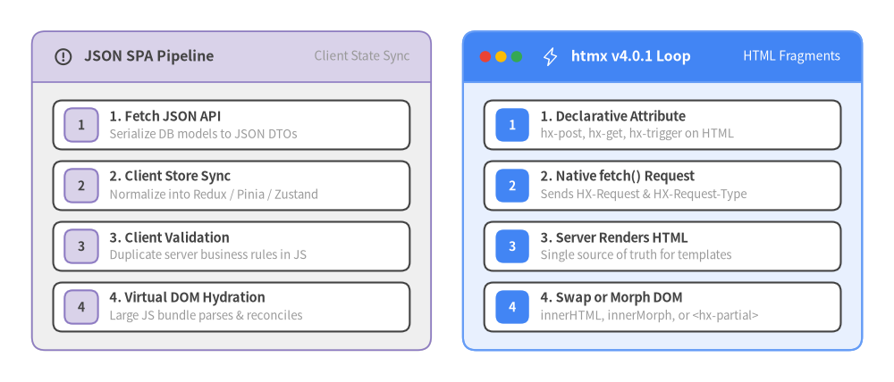
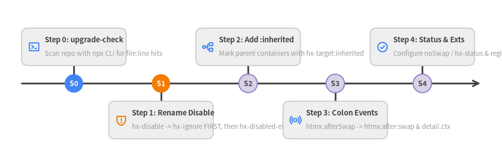

1. Getting Started & Migration Guide
htmx v4.0.1 extends standard HTML so any element—not just <a> and <form>—can issue HTTP requests (GET, POST, PUT, PATCH, DELETE, QUERY) and swap server-rendered HTML fragments directly into the DOM.

Source Code
from drawlib.canvas import save, setup
from drawlib.icons import phosphor
from drawlib.smartarts import CardList, Panel
from drawlib.styles import Styles
setup(width=168, height=72)
# Left Panel: Traditional JSON SPA Complexity
left_panel = Panel(
"JSON SPA Pipeline",
"Client State Sync",
style=Styles.Neutral,
header_style=Styles.SecondaryNeutral.patch(shape_line_width=1.2),
text_style=Styles.DarkBold.patch(text_size=11.5),
description_style=Styles.Muted.patch(text_size=10.0),
icon=phosphor.warning_circle,
icon_style=Styles.DarkBold,
header_variant="filled",
header_height=9.5,
)
left_panel.draw((6.0, 6.0), width=75.0, height=60.0, align="bottom_left")
l_xy, l_w, l_h = left_panel.get_content_box((6.0, 6.0), width=75.0, height=60.0, padding=(4.0, 3.5))
spa_list = CardList(
style=Styles.White,
text_style=Styles.DarkBold.patch(text_size=10.5),
description_style=Styles.Muted.patch(text_size=9.5),
badge_style=Styles.SecondaryNeutral,
badge_text_style=Styles.DarkBold.patch(text_size=10.0),
spacing=2.2,
)
spa_list.add("1. Fetch JSON API", "Serialize DB models to JSON DTOs", badge_text="1")
spa_list.add("2. Client Store Sync", "Normalize into Redux / Pinia / Zustand", badge_text="2")
spa_list.add("3. Client Validation", "Duplicate server business rules in JS", badge_text="3")
spa_list.add("4. Virtual DOM Hydration", "Large JS bundle parses & reconciles", badge_text="4")
spa_list.draw(l_xy, width=l_w, height=l_h)
# Right Panel: htmx v4.0.1 Hypermedia Simplicity
right_panel = Panel(
"htmx v4.0.1 Loop",
"HTML Fragments",
style=Styles.PrimaryNeutral,
header_style=Styles.PrimaryFlat,
text_style=Styles.WhiteBold.patch(text_size=11.5),
description_style=Styles.White.patch(text_size=10.0),
icon=phosphor.lightning,
icon_style=Styles.White,
dot_styles=(
Styles.DangerFlat.patch(shape_line_width=0),
Styles.WarningFlat.patch(shape_line_width=0),
Styles.SuccessFlat.patch(shape_line_width=0),
),
header_variant="window",
header_height=9.5,
)
right_panel.draw((87.0, 6.0), width=75.0, height=60.0, align="bottom_left")
r_xy, r_w, r_h = right_panel.get_content_box((87.0, 6.0), width=75.0, height=60.0, padding=(4.0, 3.5))
htmx_list = CardList(
style=Styles.White,
text_style=Styles.DarkBold.patch(text_size=10.5),
description_style=Styles.Muted.patch(text_size=9.5),
badge_style=Styles.PrimaryFlat,
badge_text_style=Styles.WhiteBold.patch(text_size=10.0),
spacing=2.2,
)
htmx_list.add("1. Declarative Attribute", "hx-post, hx-get, hx-trigger on HTML", badge_text="1")
htmx_list.add("2. Native fetch() Request", "Sends HX-Request & HX-Request-Type", badge_text="2")
htmx_list.add("3. Server Renders HTML", "Single source of truth for templates", badge_text="3")
htmx_list.add("4. Swap or Morph DOM", "innerHTML, innerMorph, or <hx-partial>", badge_text="4")
htmx_list.draw(r_xy, width=r_w, height=r_h)
save()
1.1 Installation & Bundle Variants
Install htmx.org@4.0.1 via npm or load one of the prebuilt distribution bundles via a <script> tag.
npm install htmx.org@4.0.1
htmx v4.0.1 ships three primary JavaScript distribution variants inside dist/ (alongside TypeScript definitions in dist/htmx.d.ts and individual extensions in dist/ext/*.js):
| Bundle File | Module Format | Included Capabilities | Recommended Use Case |
|---|---|---|---|
dist/htmx.js (htmx.min.js) |
IIFE (window.htmx) |
Core fetch() engine, :inherited, <hx-partial>, innerMorph/outerMorph, hx-status:XXX, HCON |
Standard <script> inclusion with selective extension loading |
dist/htmx.esm.js (htmx.esm.min.js) |
ES Module (export default htmx) |
Identical to htmx.js plus ESM default export (also sets window.htmx) |
Vite, Webpack, Rollup, Bun, or browser <script type="module"> |
dist/htmax.js (htmax.min.js) |
All-in-One IIFE (version: "4.0.1-htmax") |
Core + 11 popular extensions (hx-sse, hx-ws, hx-preload, hx-browser-indicator, hx-download, hx-pending, hx-targets, hx-live, hx-history-cache, hx-upsert, hx-alpine-compat) |
Zero-build hypermedia apps wanting batteries-included streaming & UX |
[!NOTE] In
htmax.js,htmx.config.historyCachedefaults to{ disable: true }sosessionStoragesnapshot caching only activates when explicitly enabled (htmx.config.historyCache.disable = false).
<!-- Option A: Classic IIFE Core + Selective Official Extension -->
<script src="https://cdn.jsdelivr.net/npm/htmx.org@4.0.1/dist/htmx.min.js"></script>
<script src="https://cdn.jsdelivr.net/npm/htmx.org@4.0.1/dist/ext/hx-preload.min.js"></script>
<!-- Option B: Batteries-Included htmax.min.js Bundle -->
<script src="https://cdn.jsdelivr.net/npm/htmx.org@4.0.1/dist/htmax.min.js"></script>
<!-- Option C: ES Module Import -->
<script type="module">
import htmx from 'htmx.org';
console.log('Loaded htmx version:', htmx.version); // "4.0.1"
</script>
1.2 The Core Hypermedia Mental Model
In htmx 4, the server returns HTML fragments, not JSON. Every interaction follows four deterministic steps:
- Element Trigger: A user action (or lifecycle event like
load/revealed) fires on an element carrying a request verb attribute. - Fetch Request: htmx constructs a
fetch()call withHX-*metadata headers (HX-Request: true,HX-Source,HX-Target,HX-Request-Type). - Server Fragment Response: Your backend endpoint renders an HTML snippet (plus optional
<hx-partial>elements orHX-*response headers). - Target Swap & Settle: htmx inserts or morphs the returned HTML into the target element and runs CSS settle transitions.
<!-- Client HTML -->
<button hx-post="/likes/42" hx-target="this" hx-swap="outerHTML">
Like (12)
</button>
<!-- Server Response (HTTP 200 OK, Content-Type: text/html) -->
<button hx-post="/likes/42" hx-target="this" hx-swap="outerHTML" class="liked">
Liked (13)
</button>
1.3 Core Request Verbs & Default Triggers
htmx v4.0.1 supports six declarative HTTP verb attributes, plus the hx-action / hx-method pair for separating URL and HTTP verb:
| Attribute | HTTP Method | Includes Enclosing <form> Automatically? |
Typical Usage |
|---|---|---|---|
hx-get="/url" |
GET |
No (use hx-include="closest form" if needed) |
Fetching views, search results, tabs, lazy fragments |
hx-post="/url" |
POST |
Yes | Creating resources, submitting forms, state mutations |
hx-put="/url" |
PUT |
Yes | Idempotent full replacement of a resource |
hx-patch="/url" |
PATCH |
Yes | Partial field updates on an existing resource |
hx-delete="/url" |
DELETE |
No (use hx-include="closest form" if needed) |
Deleting a table row or item |
hx-query="/url" |
QUERY |
Yes | Safe, idempotent query requests carrying a request body |
Default Triggers by Element Type
When you omit hx-trigger, htmx automatically chooses the natural DOM event for the element:
<input>,<textarea>,<select>: Triggers onchange.<form>: Triggers onsubmit(automatically callingevent.preventDefault()).- All other elements (
<button>,<a>,<div>,<tr>, etc.): Triggers onclick.
[!TIP] Both
hx-*anddata-hx-*attributes work out of the box becausehtmx.config.prefixdefaults to"data-hx-"as an additive prefix alongsidehx-.
1.4 Migrating from htmx 2 to htmx 4.0.1
htmx 4 is a clean-slate rewrite on top of fetch(). If you are upgrading an existing htmx 2 codebase, follow this structured migration workflow.

Source Code
from drawlib.canvas import save, setup
from drawlib.icons import phosphor
from drawlib.smartarts import Roadmap
from drawlib.styles import Styles
setup(width=174, height=58)
rm = Roadmap(
style=Styles.Neutral,
text_style=Styles.DarkBold.patch(text_size=10.5),
description_style=Styles.Muted.patch(text_size=9.5),
spine_style=Styles.DarkBold,
badge_style=Styles.SecondaryNeutral,
badge_text_style=Styles.DarkBold.patch(text_size=10.0),
icon_style=Styles.PrimaryBold,
direction="horizontal",
alternating=True,
spacing=2.5,
)
rm.add(
"Step 0: upgrade-check",
"Scan repo with npx CLI for file:line hits",
badge_text="S0",
icon=phosphor.terminal_window,
badge_style=Styles.PrimaryFlat,
badge_text_style=Styles.WhiteBold.patch(text_size=10.0),
)
rm.add(
"Step 1: Rename Disable",
"hx-disable -> hx-ignore FIRST, then hx-disabled-elt -> hx-disable",
badge_text="S1",
icon=phosphor.shield_warning,
badge_style=Styles.AccentFlat,
badge_text_style=Styles.WhiteBold.patch(text_size=10.0),
icon_style=Styles.AccentBold,
)
rm.add(
"Step 2: Add :inherited",
"Mark parent containers with hx-target:inherited",
badge_text="S2",
icon=phosphor.tree_structure,
)
rm.add(
"Step 3: Colon Events",
"htmx:afterSwap -> htmx:after:swap & detail.ctx",
badge_text="S3",
icon=phosphor.broadcast,
)
rm.add(
"Step 4: Status & Exts",
"Configure noSwap / hx-status & registerExtension",
badge_text="S4",
icon=phosphor.check_circle,
)
rm.draw(xy=(6.0, 6.0), width=162.0, height=46.0, align="bottom_left")
save()
Step 0: Run the Shipped upgrade-check CLI Scanner
htmx v4.0.1 includes an automated static scanner (upgrade-check) that scans .html, .php, .js, .ts, .jinja, .jinja2, .j2, .erb, and .hbs files and prints clickable file:line migration hints:
# Run the official htmx 4.0.1 upgrade scanner on your project
npx htmx.org@4.0.1 upgrade-check -- ./path/to/project
# Include additional template extensions such as .vue or .svelte
npx htmx.org@4.0.1 upgrade-check --ext .vue ./path/to/project
Step 1: Critical Rename Order for hx-disable vs. hx-ignore
[!CAUTION] Rename
hx-disabletohx-ignoreFIRST! In htmx 2,hx-disableprevented htmx from processing an element (security boundary), whilehx-disabled-eltset the HTMLdisabledattribute on buttons during a request. In htmx 4,hx-ignorestops htmx processing, andhx-disabledisables form controls during requests. If you renamehx-disabled-eltfirst, you will mix the two meanings!
| Migration Order | htmx 2 Attribute | htmx 4 Replacement | Semantic Purpose |
|---|---|---|---|
| 1st (Mandatory First) | hx-disable |
hx-ignore |
Prevent htmx from parsing/executing hx-* inside untrusted HTML |
| 2nd | hx-disabled-elt="find button" |
hx-disable="find button" |
Add disabled attribute to elements while a request is in flight |
| 3rd | hx-request='{"timeout":5000}' |
hx-config="timeout:5000" |
Per-element Fetch/timeout configuration (accepts HCON or JSON) |
| 4th | hx-vars="x: compute()" |
hx-vals="js:{x: compute()}" |
Dynamic JavaScript request parameters |
| 5th | hx-ext="sse" |
Remove attribute | Extensions activate globally when their <script> tag is loaded |
| 6th | hx-disinherit="*" / hx-inherit |
Remove attribute | Inheritance is explicit via :inherited on parent attributes |
Step 2: Summary of Key Behavioral Differences (htmx 2 vs. htmx 4)
| Area | htmx 2 Behavior | htmx 4.0.1 Behavior | Migration Action / Compatibility Bridge |
|---|---|---|---|
| Attribute Inheritance | Implicit on almost all attributes | Explicit only via :inherited (e.g. hx-target:inherited) |
Add :inherited to parent containers, or set htmx.config.implicitInheritance = true |
| Non-200 Status Swaps | 4xx / 5xx did NOT swap by default |
All statuses swap except 204 and 304 |
Use hx-status:422 / hx-status:5xx, or set noSwap: [204, 304, "4xx", "5xx"] |
| Event Names | camelCase (htmx:configRequest, htmx:afterSwap) |
Colon-separated (htmx:config:request, htmx:after:swap) |
Rename listeners, or load dist/ext/htmx-2-compat.js during transition |
| Event Payload | evt.detail.xhr, evt.detail.headers |
evt.detail.ctx (ctx.request.headers, ctx.response.raw) |
Update event handlers to mutate evt.detail.ctx.request |
| Request Headers | HX-Trigger: btn-id (ID only) |
HX-Source: button#btn-id (tag#id format) |
Update server middleware reading HX-Trigger -> HX-Source |
hx-delete Form Data |
Included enclosing <form> inputs |
Excludes enclosing <form> (matches hx-get) |
Add hx-include="closest form" to delete buttons inside forms |
| OOB Swap Order | OOB swapped before main swap | Main swap runs first, then OOB / <hx-partial> swaps |
Use swapEmpty:true or allowEmptySwapAfterOOB: true if OOB-only clears target |
Incremental Compatibility Bridges
For large production codebases, you can migrate incrementally by enabling htmx 2 compatibility flags and loading the official htmx-2-compat.js extension:
<meta name="htmx-config" content='{
"implicitInheritance": true,
"noSwap": [204, 304, "4xx", "5xx"]
}'>
<script src="/dist/htmx.min.js"></script>
<script src="/dist/ext/htmx-2-compat.min.js"></script>